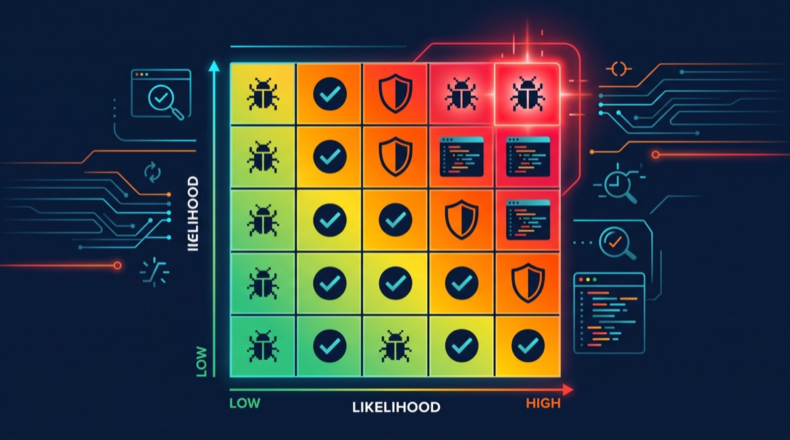

Testiranje zasnovano na riziku: kako odlučiti šta testirati prvo kada ne možete testirati sve
Praktičan vodič kroz testiranje zasnovano na riziku: kako ocijeniti funkcionalnosti po vjerovatnoći i uticaju i na osnovu toga odlučiti šta se testira prije roka.
Svaki QA tim prije ili kasnije udari u isti zid: datum objave koji se ne pomjera, gomila testova koja stalno raste i premalo sati da se svaki test slučaj pokrene nad svakom izmjenom. Uobičajena reakcija je da se sve testira pomalo, što u praksi znači da se najrizičnije stvari testiraju nedovoljno, a najbezbjednije više nego što im treba. Testiranje zasnovano na riziku je izlaz iz te zamke: umjesto da trud ravnomjerno rasporedite, namjerno ga najviše trošite na ono što će se najvjerovatnije pokvariti i što je najskuplje ako se pokvari.

Osnovna ideja: vjerovatnoća puta uticaj
Testiranje zasnovano na riziku ocjenjuje svaku funkcionalnost, modul ili izmjenu po dvije dimenzije:
- Vjerovatnoća — koliko je vjerovatno da ovaj dio sistema ima grešku? Složena logika, novi kod, skorašnje izmjene i oblasti sa istorijom grešaka ovdje dobijaju višu ocjenu.
- Uticaj — ako se pokvari, koliko je to loše? Gubitak prihoda, oštećenje podataka, pravna ili regulatorna izloženost i broj pogođenih korisnika — sve to podiže uticaj.
Pomnožite (ili kombinujte) ove dvije vrijednosti i dobijate ocjenu rizika po kojoj možete rangirati funkcionalnosti. Timovima rijetko treba precizna matematika — jednostavna skala visoko/srednje/nisko na svakoj osi, pretvorena u mrežu 3x3 ili 5x5, obično je dovoljna da razdvoji „ovo prvo detaljno testiraj" od „ovo samo smoke testiraj i idi dalje". Formalnije verzije iste ideje postoje u metodama kao što su FMEA (Failure Mode and Effect Analysis, analiza načina i posljedica otkaza) i analiza stabla grešaka, koje su uobičajene u regulisanim industrijama gdje morate dokumentovati zašto je rizik ocijenjen baš tako, ali većini produktnih timova taj dodatni teret nije potreban.
Primjer iz prakse
Zamislite online prodavnicu srednje veličine koja objavljuje verziju sa tri izmjene, i QA tim koji ima dva dana umjesto sedmice koju bi inače želio:
| Funkcionalnost | Vjerovatnoća greške | Uticaj ako se pokvari | Rizik |
|---|---|---|---|
| Checkout i tok plaćanja | Srednja (u ovom sprintu su ga dirala dva različita tima) | Visok (direktan gubitak prihoda, neuspjele narudžbe) | Visok |
| Obračun popusta za promo kodove | Visoka (nova logika za kombinovanje popusta, granični slučajevi sa isteklim kodovima) | Srednji (pogrešni iznosi, zahtjevi za povrat novca, ali narudžbe se i dalje završavaju) | Visok |
| Dugme „sačuvaj za kasnije" na listi želja | Niska (jednostavna UI izmjena, bez backend logike) | Nizak (kozmetička funkcionalnost, bez uticaja na transakcije) | Nizak |
Sa dva dana umjesto sedmice, tim ne pokušava da sve tri stavke pokrije podjednako. Checkout dobija kompletnu regresionu pokrivenost plus granične slučajeve (istekle kartice, djelimična zaliha, timeout tokom naplate). Logika promo kodova dobija ciljano testiranje novog kombinovanja popusta i konkretnih graničnih slučajeva koji su se promijenili, umjesto ponovnog testiranja cijelog sistema popusta. Dugme na listi želja dobija brz smoke test i stejkholderima se eksplicitno označava kao pokrivenost sa manjim stepenom sigurnosti za ovu objavu — a to je dio koji timovi preskaču, a ne bi trebalo. Testiranje zasnovano na riziku funkcioniše kao kompromis samo ako je taj kompromis vidljiv, a ne prećutan.
Kako da ovo postane dio redovnog rada
Matrica iznad je korisna i kao jednokratna vježba, ali se pravo isplati tek kada postane rutina. U praksi to izgleda ovako:
Tokom planiranja sprinta ili refinementa:
1. Navedite funkcionalnosti/izmjene koje ulaze u ovu objavu
2. Za svaku ocijenite vjerovatnoću (složenost koda, veličina izmjene, istorija grešaka)
3. Za svaku ocijenite uticaj (prihod, broj korisnika, usklađenost, povratnost)
4. Rangirajte ih i u skladu s tim rasporedite vrijeme za testiranje
5. Zapišite šta je dobilo manju pokrivenost, i zaštoTaj posljednji korak — zapisivanje onoga što je namjerno manje testirano — pretvara testiranje zasnovano na riziku u odluku koju stejkholderi mogu da vide i ospore, umjesto da QA tim pod pritiskom roka tiho skraćuje postupak.
Gdje testiranje zasnovano na riziku zakazuje
Ovaj pristup nije besplatan, i vrijedi biti iskren o tome gdje ne radi:
Dobro je onoliko koliko je dobra procjena rizika. Ako tim potcijeni koliko je vjerovatno da će izmjena nešto pokvariti — što je česta greška kod koda koji više niko u potpunosti ne razumije — kategorija „nizak rizik" može sakriti ozbiljnu grešku. Ocjene rizika zasnovane na osjećaju umjesto na podacima (skorašnja istorija incidenata, učestalost izmjena koda, gustina grešaka) obično odražavaju onoga ko je najglasniji u prostoriji, a ne stvarni rizik.
Oblasti niskog rizika ne ostaju zauvijek niskog rizika. Funkcionalnost ocijenjena kao niskorizična zato što je bila jednostavna kada je objavljena može postati visokorizična čim drugi kod počne da zavisi od nje. Ocjene rizika treba preispitivati, a ne postaviti jednom i koristiti za svaku objavu.
Loše se uklapa sa istraživačkim testiranjem. Testiranje zasnovano na riziku je usmjeravajuće — govori vam gdje da gledate. Istraživačko testiranje funkcioniše upravo zato što unaprijed ne znate gdje je greška. Previše oslanjanja na ocjene rizika može navesti tim da prestane da gleda tamo gdje nije predvidio, a baš tu živi određena vrsta grešaka.
Potreban je neko ko razumije sistem da radi ocjenjivanje. U timu bez QA lead-a ili seniora koji zna gdje su krhki dijelovi koda, ocjene rizika mogu da odražavaju skorašnje naslove (posljednji pad sistema) umjesto stvarnog strukturnog rizika.
Šta dalje
- Izaberite sljedeću objavu i napravite jednostavnu tabelu vjerovatnoće i uticaja za izmjene koje ulaze u nju, makar neformalno u spreadsheet-u ili u tiketu sprinta.
- Izvucite produkcijske incidente ili hotfix-eve iz posljednja dva-tri mjeseca i provjerite da li se poklapaju sa oblastima koje biste ocijenili kao visokorizične. Ako se ne poklapaju, vaše kriterijume za rizik treba prilagoditi.
- Dodajte „odluku o pokrivenosti" kao vidljivu stavku u release notes ili dokumente za odobrenje objave — šta je dobilo kompletno testiranje, šta smanjenu pokrivenost, i zašto — kako bi kompromis bio odluka tima, a ne tihi propust.
- Ako radite u regulisanoj oblasti (finansije, zdravstvo, avijacija) i morate formalno da opravdate ocjene rizika, pogledajte FMEA kao strukturiranu polaznu tačku umjesto da gradite sopstveni okvir od nule.
Nastavi sa člancima Testiranje zasnovano na riziku: šta ne testirati, Piramida testiranja ili Testing Trophy i Exploratory testiranje zasnovano na sesijama.